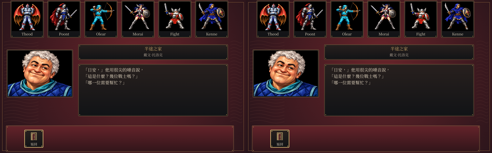

相同HD素材、同一份存檔、seed1、相同L R RET SPACE。左為Linux，右為Windows於Wine9繪製，沒有原版parity聲明。
固定整數雙線性取樣已接入。原型及正式程式各三十組、修正後實際封包二十組，EGA零差，HD逐通道最多一色階。首次候選的兩色階失敗保留，可按下方切換查看。新版依使用者決定暫緩發布。
修正後同主題對比 首次候選對比 首次Linux 首次Windows／Wine修正後同主題對比

六包與影片驗收 · 來源、SHA-256及權利清冊 · 76秒新版影片